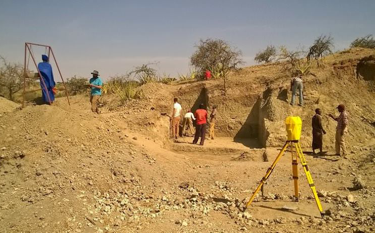

Latest News
Scientists gather in Tanzania for Olduvai Gorge workshop
April 10, 2017

A group of scientists will convene in Tanzania in August for a John Templeton Foundation funded workshop that will focus on human cognitive evolution at the prehistoric archaeological site of Olduvai Gorge, one of the most important sites for paleoanthropology in the world because of the numerous stone tools and early human fossils that have been discovered there.
Human cognitive evolution in China
February 27, 2017
A group of scientists will convene in Beijing, China in March for a John Templeton Foundation funded workshop that will focus on human cognitive evolution at prehistoric archaeological sites in the Nihewan Basin in the Hebei Province, where there is evidence for Oldowan-like stone technologies and fossil animal bones that extend as far back as 1.7 million years ago.
Human Cognitive Evolution course at King Abdullah University
Jan 27, 2017

Drs. Kathy and Nicholas Toth recently traveled in January to King Abdullah University for Science and Technology (KAUST) on the Red Sea just outside of Jeddah in Saudi Arabia to give three days of invited lectures on the Evolution of Human Cognition. As a part of their class, they gave a stone tool-making demonstration and taught enthusiastic students the basics of flaking stone.
Upcoming Events
Cognitive neuroscience of stone tool manufacturing
April 5, 2017

Invited speaker Dr. Natalie Uomini (Max Planck Institute for the Science of Human History, Jena) will deliver a talk titled, “Cognitive neuroscience of stone tool manufacturing” during our weekly John Templeton Foundation Seminar Series on Human Cognitive Evolution.
April 12, 2017 at 2:00 pm
6th Floor Geology Building, Psychology Conference room, Indiana University
April 12, 2017 at 2:00 pm
6th Floor Geology Building, Psychology Conference room, Indiana University
Past Events
How do apes communicate?
February 23, 2017

Invited speaker Dr. Jared Taglialatella (Kennesaw State University) will discuss ape communication during our weekly John Templeton Foundation Seminar Series on Human Cognitive Evolution.
March 1, 2017 at 2:00 pm
6th Floor Geology Building, Psychology Conference room, Indiana University
March 1, 2017 at 2:00 pm
6th Floor Geology Building, Psychology Conference room, Indiana University
What does it mean to have a belief?
February 15, 2017

Invited speaker Dr. Albert Newen (Ruhr-Universität Bochum) will discuss “What does it mean to have a belief: An evolutionary perspective” during our weekly John Templeton Foundation Seminar Series on Human Cognitive Evolution.
February 22, 2017 at 2:00 pm
6th Floor Geology Building, Psychology Conference room, Indiana University
February 22, 2017 at 2:00 pm
6th Floor Geology Building, Psychology Conference room, Indiana University
Dr. Peter Todd to discuss information exploitation strategies
February 8, 2017

As a part of the John Templeton Foundation Seminar Series on Human Cognitive Evolution, Dr. Peter Todd (Indiana University) will be discussing, Information Exploitation Strategies as a Driver of Human Cognitive Evolution.”
February 15, 2017 at 2:00 pm
6th Floor Geology Building, Psychology Conference room, Indiana University
February 15, 2017 at 2:00 pm
6th Floor Geology Building, Psychology Conference room, Indiana University
Dr. Colin Allen to discuss the evolution of expertise
February 1, 2017

As a part of the John Templeton Foundation Seminar Series on Human Cognitive Evolution, Dr. Colin Allen (Indiana University) will be delivering a talk titled, “Evolving Expertise within the Socio-Technological Complex as a Driver of Human Cognitive Evolution.”
February 8, 2017 at 2:00 pm
6th Floor Geology Building, Psychology Conference room, Indiana University
February 8, 2017 at 2:00 pm
6th Floor Geology Building, Psychology Conference room, Indiana University
Cognitive Evolution in the News
Macaques, like humans, know how well they can recall memories
January 12, 2017
Researchers have pinpointed a brain region monkeys use to evaluate their ability to recall memories. To date, this metamemory process, which requires a higher level of self-reflection about our own cognition, was thought by some to be unique to humans.
Earliest evidence in fossil record for right-handedness
October 20, 2016
Perhaps the bias against left-handers dates back much further than we thought. By examining striations on teeth of a Homo habilis fossil, researchers have found the earliest evidence for right-handedness in the fossil record dating back 1.8 million years.
Turning brains to ‘soup’ could unlock secrets of our most complex organ
October 9, 2016
So how did we, and we alone, come by so many cortical neurons? The answer seems to lie in what may have been one of the first technologies invented by our kind: cooking.
Disputed Neandertal region confirmed in France
September 20, 2016
Researchers have helped to solve an archaeological dispute -- confirming that Neanderthals were responsible for producing tools and artifacts previously argued by some to be exclusively in the realm of modern human cognitive abilities.
Human intelligence evolved thanks to abnormally fast blood flow to the brain
August 31, 2016
An ever-increasing and disproportionately high blood flow to the brain over three million years of human evolution may be the reason we became so intelligent. While brain size increased 3.5 fold over three million years, cerebral blood flow increased six fold.
Large human brain evolved as a result of “sizing each other up”
August 12, 2016
Cooperation and reward may have been instrumental in driving brain evolution, suggesting that the challenge of assessing others could have contributed to the large brain size in humans.
Total number of neurons--not enlarged prefrontal region--hallmark of human brain
August 10, 2016
The total number of neurons, not an enlarged prefrontal region, differentiates the human brain from those of other primates.
Orangutan’s vocal controls could hold the secret to the origins of human language
July 27, 2016
The voice control shown by humans could derive from an evolutionary ancestor with similar voice control capacities as those found in orangutans and in all great apes more generally.
Chimpanzees who travel are more frequent tool users
July 19, 2016
The development of tool use and sociality in early humans could have been adaptive responses to heightened habitat instability caused by climate change.
The primate brain is ‘pre-adapted’ to face potentially any situation
June 10, 2016
Scientists have shown how the brain anticipates all of the new situations that it may encounter in a lifetime by creating a special kind of neural network that is 'pre-adapted' to face any eventuality.
Did human-like intelligence evolve to care for helpless babies?
May 23, 2016
Experts in in brain and cognitive sciences have developed a novel evolutionary model in which the development of high levels of intelligence may be driven by the demands of raising offspring.
First stone tools used for food processing may have fueled evolution by helping us grow bigger brains
March 9, 2016
Using stone tools and cooking played a very important role in human evolution because it released selection for big faces and big teeth, which then enabled selection for shorter faces which were important for speech, and enabled us to grow big brains and have large bodies.
Pretty women and handsome men can trigger memory improvement, motivate others to work harder
February 28, 2016
An evolutionary approach to social cognition implies that proximate mating motives may lead people to display desirable mental traits. In signaling such traits, one can increase the likelihood of attracting a potential mate and signal a variety of reproductively beneficial characteristics.
Human children and wild great apes share their tool use cognition
February 24, 2016
Young children will spontaneously invent tool behaviors to solve novel problems, without the help of adults, much as non-human great apes have been observed to do. The findings are contrary to the popular belief that basic tool use in humans requires social learning.
Animals with larger brains are best problem solvers, study shows
January 25, 2016
Despite decades of research, the idea that relative brain size predicts cognitive abilities remains highly controversial, because there is still little experimental evidence to support it. However, a new paper describes a massive experiment that supports the theory.